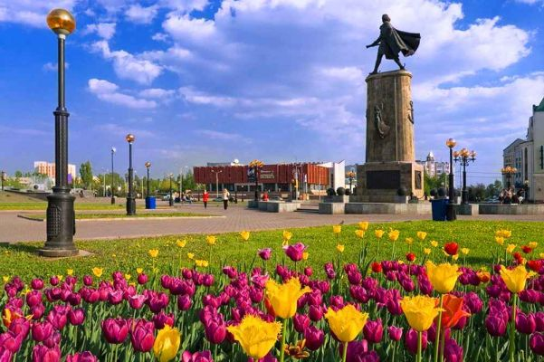
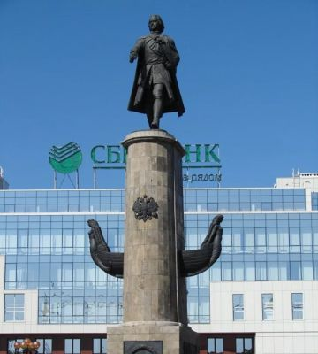

Площадь Петра Великого (Липецк)
Площадь Петра Великого — парадная площадь Липецка, на которой проходят основные мероприятия, в том числе День города. До этого основной площадью была Соборная. Находится на границе Советского и Правобережного округов между улицами Карла Маркса, Литаврина и Октябрьской. Прежнее название — Площадь Карла Маркса.
Проект создания площади появился на макете 1950-х годов. 16 мая 1969 года присвоено официальное название — площадь имени Карла Маркса, однако самой площади тогда не было.
В 1975 году открылась гостиница «Липецктурист» (у улицы Карла Маркса).
Идея начала реализовываться в 1980-е годы. Её авторами стали архитекторы С. А. Сошников, В. В. Вюст, С. М. Сорокин и С. Г. Кулагина. Тогда на площади Карла Маркса появились новый кинотеатр «Октябрь» на 1100 мест (1989, дом № 6), жилые дома, открывающими бульвар в сторону реки Воронеж, а также несколько административных зданий.
29 октября 1996 года в ознаменование 300-летия русского флота в центре площади Маркса был открыт уже второй в Липецке памятник Петру I (первый — в Петровском проезде). Он представляет собой в отличие от предыдущего скульптуру (ск. В. М. Клыков, А. Е. Вагнер, арх. С. А. Сошников).
С тех пор это место стали называть площадь Петра, Петровская площадь. Липецкая администрация пошла на встречу липчанам: 24 июня 2003 года она официально стала площадью Петра Великого. Такое же название получила и остановка транспорта, уже через два года переименованная в «Нижний парк» (по Нижнему парку, который с севера обрамляет площадь).
15 или 16 июля 2006 года на площади открылся светомузыкальный фонтан. Возведение объекта было предусмотрено генеральным планом развития областного центра, принятым в 1995 году. Предполагалось, что фонтан появится вскоре после того, как будет установлен памятник первому российскому императору — основателю нашего города. Затем должен был появиться и памятник Екатерине II, которая своим указом придала Липецку статус хоть и уездного, но города. Однако тогда на полное воплощение идеи в жизнь не хватило денег.
Изображения:


Площадь Петра Великого на карте:
|